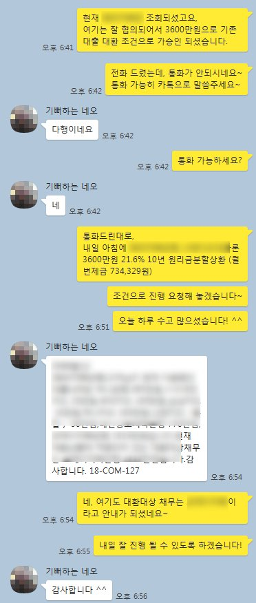
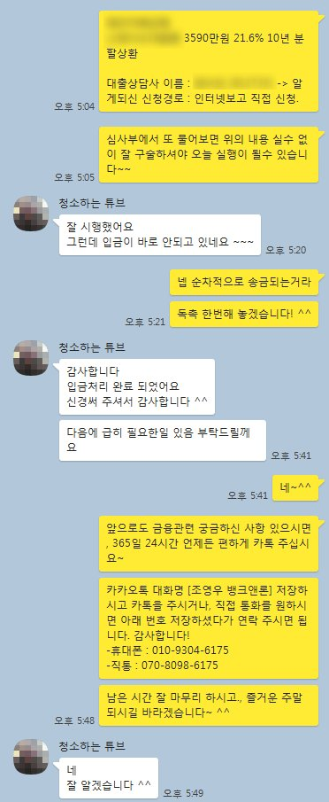

4대보험 가입 직장인 채무통합 3550만원 승인 사례
안녕하세요? 뱅크앤론 조영우 이사 입니다.
오늘은 긴급자금이 필요하셨던 고객님께, 기존 2금융권 채무를 대환하는 조건으로 추가자금 마련해 드린 사례에 대하여 공유 드리겠습니다.
해당 고객님의 대략적인 프로필은 아래와 같습니다.
- 62세 여성
- 직장인 / 4대가입 / 7개월 근무 / 연봉 2400만원
- 기대출 : 은행 600만, 저축은행 2000만
이미 카드 결제일이 이틀 지난 상황으로, 빠른 진행이 필요하셨으나, 연령이 다소 많으시고 최근 2금융권 대출로 인해 진행이 어려우셨습니다.
이에 현 조건에 가능성이 높은 금융사를 추천드렸고, 사용중인 저축은행 2000만원 대환하는 조건으로 총 3550만원 승인되시어 필요자금을 모두 해결할 수 있게 되셨습니다.
아래은 고객님과 실제 대화한 카톡 내용입니다. 참고 부탁 드리겠습니다.

